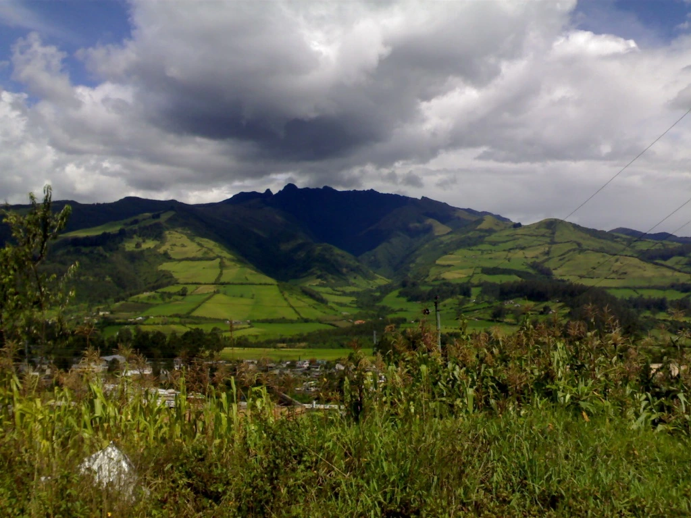
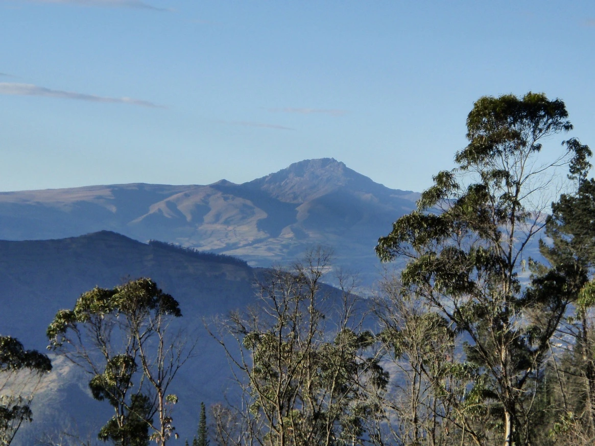

Moderada-Difícil
Moderada-Difícil
Teleférico + Rucu Pichincha
Cumbre icónica con senderos de páramo y vistas espectaculares de Quito y la cordillera.
 Moderada-Difícil
Moderada-Difícil
Cumbre icónica accesible desde el teleférico, con senderos de páramo y vistas espectaculares de Quito y la cordillera andina. El acceso en teleférico sube hasta ~3,900 msnm; desde allí el sendero atraviesa páramo abierto hasta la cumbre. El último tramo es un arenal empinado y técnico que requiere buena condición física.

ModeradaReserva natural con bosques andinos y pajonales, ideal para una caminata completa en contacto con la biodiversidad. El bosque primario protege más de 120 especies de aves. Ubicado al sureste de Quito, ofrece vistas del Cotopaxi y el Antisana en días despejados.
 Fácil-Moderada
Fácil-Moderada
Uno de los pocos cráteres volcánicos habitados del mundo. El descenso es empinado pero corto. El fondo del cráter goza de un microclima único con tierras fértiles y paisajes pastorales inigualables. Vista panorámica desde el mirador de Ventanillas.
 Difícil
Difícil
Volcán activo con una ruta exigente que atraviesa formaciones volcánicas hasta su cráter humeante. Requiere experiencia previa en alta montaña. Se recomienda verificar el estado de actividad volcánica con el IGEPN antes de cada salida.

Fácil-ModeradaVolcán extinto ideal para aclimatación, con senderos accesibles y vistas panorámicas excepcionales de los valles de Los Chillos y Tumbaco. Perfecto como primer volcán antes de rutas más exigentes. Acceso desde varios puntos del valle.
 Fácil
Fácil
Ruta tranquila entre bosques nublados, ríos y cascadas, ideal para desconectarse cerca de la ciudad. El sendero es apto para familias y principiantes, con mínima ganancia de altitud. El bosque nublado de Nono es uno de los pulmones más cercanos a Quito.
Guías técnicas, rutas verificadas y comunidad para exploradores del altiplano ecuatoriano.
Explora las montañas y volcanes que rodean Quito, desde caminatas familiares hasta ascensos técnicos.
Moderada-Difícil
Cumbre icónica con senderos de páramo y vistas espectaculares de Quito y la cordillera.
Reserva natural con bosques andinos y pajonales, ideal para avistamiento de aves y cóndores.
Fácil-Moderada
Camina dentro de uno de los únicos cráteres volcánicos habitados del mundo.
Difícil
Volcán activo con ruta exigente hasta su cráter humeante. Requiere experiencia en alta montaña.
Volcán extinto con vistas panorámicas perfectas para aclimatación y caminatas moderadas.
Fácil
Ruta tranquila entre bosques nublados, ríos y cascadas, ideal para familias y principiantes.
Un vistazo a los paisajes que te esperan en los Andes de Quito.
Información técnica precisa con puntos de referencia y alertas actualizadas por la comunidad.
Registra y gestiona tu historial de lugares visitados y mantén tu bitácora andina.
Lee y comparte tu experiencia en cada ruta. Información actualizada por quienes la recorren.
Inscríbete a salidas grupales, talleres de orientación y jornadas de reforestación.
Recibe recomendaciones de rutas según tu nivel, disponibilidad y preferencias de terreno.
Administración centralizada de rutas, eventos, sugerencias y comentarios de la comunidad.
Voces de quienes recorren nuestros senderos.
"La guía técnica fue impecable. Los tiempos estimados y los puntos de referencia me ayudaron a sentirme seguro incluso cuando bajó la neblina."
"Viajé sola y los mapas fueron mi mejor compañía. Es increíble tener tanta información local y confiable en un solo lugar."
"Llevé a mis hijos siguiendo la recomendación de nivel 'Fácil' y fue un éxito total. El bosque nublado nos dejó sin palabras."
"Perfecta para aclimatarse. Las vistas del valle de Los Chillos desde la cima son un regalo. Regresaré pronto al Pasochoa."
Únete a nuestras salidas grupales organizadas.
location_onTeleférico de Quito
20 cupos disponibles
location_onMirador Ventanillas
30 cupos disponibles
location_onLloa, Pichincha
12 cupos disponibles
Depende del nivel. Las rutas Fácil y Fácil-Moderada son aptas para principiantes y familias sin ninguna experiencia técnica. Para rutas Difícil como el Guagua Pichincha sí se recomienda experiencia previa en alta montaña y buena condición física.
Crea una cuenta de turista, accede a la sección de Eventos y pulsa "Registrarse" en el evento de tu elección. Recibirás un correo de confirmación con los detalles del punto de encuentro.
Aunque muchas rutas están bien señalizadas, siempre recomendamos ir acompañado. Si decides ir solo/a, avisa siempre a alguien sobre tu ruta, hora de salida y hora estimada de retorno. Lleva carga completa en el teléfono y mapas descargados offline.
La mayoría de las rutas en Reservas Nacionales son gratuitas bajo registro. Algunas como el Teleférico tienen costos asociados que detallamos en cada guía de ruta. El Pasochoa requiere un valor de ingreso a la Reserva Geobotánica.
La temporada seca andina (junio–septiembre) ofrece los cielos más despejados. Sin embargo, el clima de la sierra es impredecible: siempre parte temprano y lleva ropa impermeable independientemente de la época del año.
Sí. Desde tu perfil de turista puedes enviar sugerencias al equipo administrador. Si la ruta cumple los criterios de verificación, la publicamos en el catálogo con el crédito correspondiente.
¿Quieres reportar una ruta, colaborar o simplemente saber más? Escríbenos.